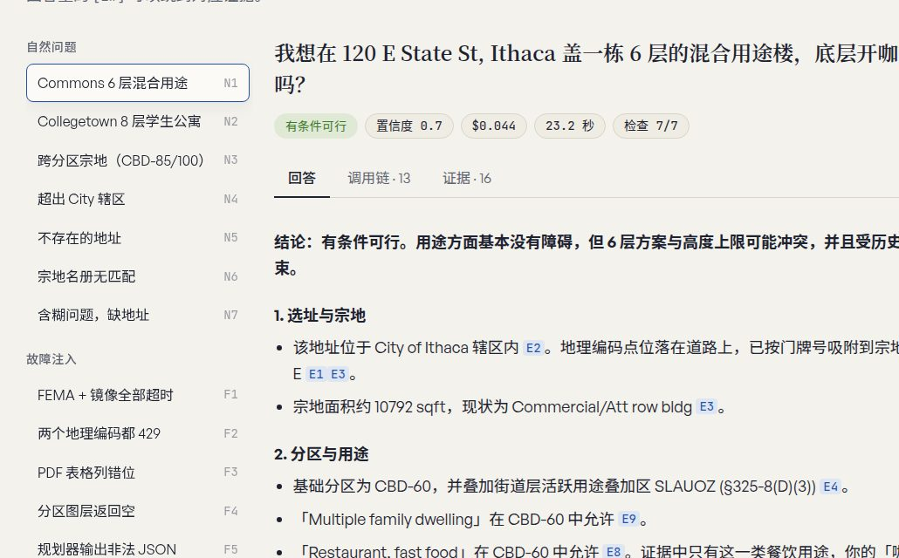
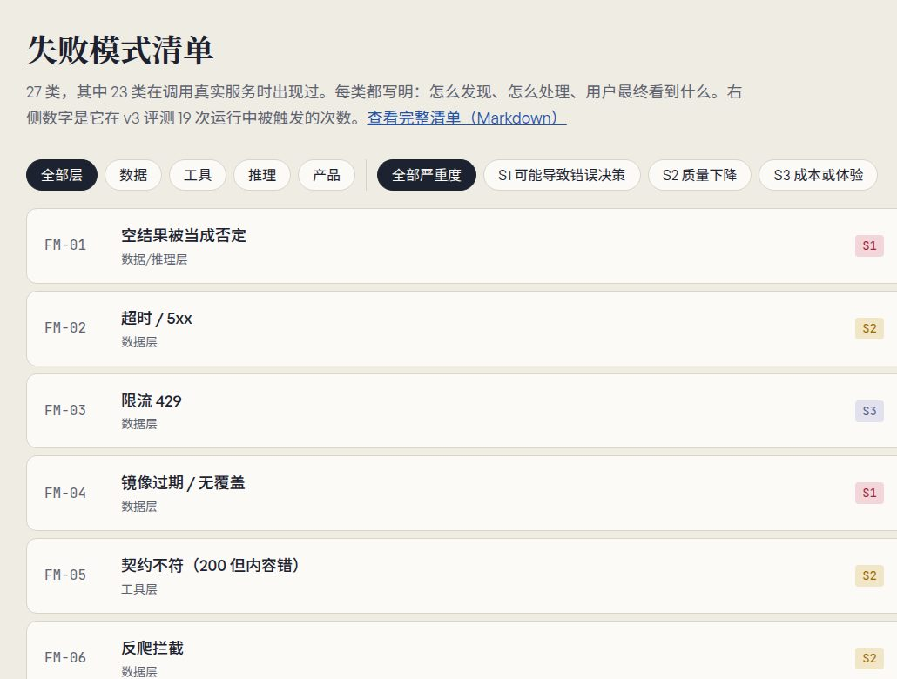
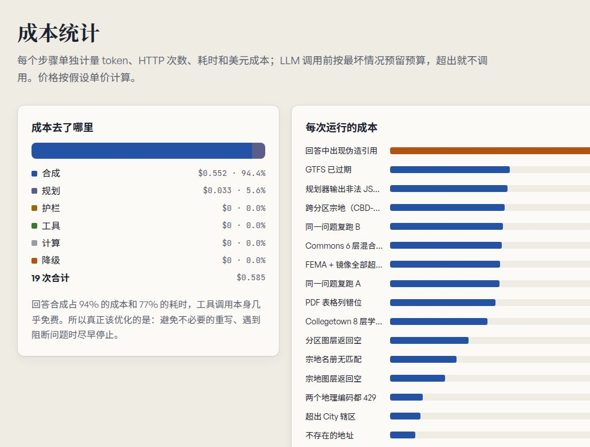

跑通只是起点。这个项目的重点是出错时怎么办：工具返回空、中间结果不可信、成本失控时，Agent 怎么降级，用户最终看到什么。
选址是高代价决策。对这类问题，一个看起来干净但其实没核实的回答，比直接说“查不到”更危险。所以我先定义“什么算失败”，再写 Agent。
这是我“规划资料助手”的第二版。第一版是 RAG：只在固定资料里检索和回答。第二版改成 Agent：用户问一个选址问题（例如“在 120 E State St 盖 6 层混合用途楼，底层开咖啡馆，可行吗？”），Agent 自己规划步骤，调用真实公开服务——City of Ithaca 分区与宗地 GIS、分区规则 PDF、FEMA 洪水图层、公交 GTFS——做确定性计算，最后给出带 [E#] 引用的回答，并展示完整调用链。
目标用户是做前期研判的规划师、开发顾问和小业主。他们要的不是一个“可行”，而是：哪些项已核实、哪些没核实、去哪里核实。
整理了 27 类失败模式，其中 23 类在调用真实服务时出现过，不是假设。每类都写明：属于哪一层（数据 / 工具 / 推理 / 产品）、检测信号、处理策略、用户看到什么、严重度。几个例子：
评测集 19 个场景：7 个自然问题、9 个故障注入（超时、429 限流、PDF 列错位、规划器输出非法 JSON、回答里插入伪造引用、预算上限等）、2 个一致性复跑、1 个无 LLM 基线。三轮迭代：
每个步骤单独计量 token、HTTP 次数、耗时和美元成本；每次调用模型前按最坏情况预留预算，不够就不调用，直接输出证据清单。v3 结果：完整回答中位成本 $0.043、约 22 秒；19 次总计 $0.585。
一个反直觉的发现：94% 的成本和 77% 的耗时来自最后的回答合成，工具调用几乎不花钱。护栏在非注入运行中拦截了 3 条，全部是误报，每次重写让成本接近翻倍。所以我把护栏当成一个分类器来评估精确率和成本，把真实误报加进护栏测试，修复后该场景成本从 $0.082 降到 $0.043。
独立完成：问题范围、工具与降级设计、护栏、评测场景、成本核算和展示页。最大的收获是：Agent 的产品质量主要不在“回答得多好”，而在边界——什么时候停止、什么时候说“未能核实”、为一次重写多花多少钱值不值。容错和可观测必须一起做，否则兜底逻辑会把缺陷藏起来。


